ELON MUSK
"The man behind SpaceX, Tesla, SolarCity, OpenAI, and TheBoring Company."

 Elon Musk's Life Timeline
- Born (28 June 1971) : Born on 28th June 1971 in South Africa. Elon Reeve Musk (born June 28, 1971) is a South African-born, Canadian-American business magnate, engineer, inventor and investor. He is the CEO and CTO of SpaceX, CEO and product architect of Tesla Motors, and chairman of SolarCity. In December 2016, Musk founded The Boring Company, an infrastructure and tunnel-construction company focused on tunnels specialized for electric vehicles.
- Blastar video game (12 January 1991) : Blastar was a game written by Elon Musk in 1984 (at the age of 12). The source code was published in a magazine and he received $500 for it. You can play a replica of the Blastar video game here: https://blastar-1984.appspot.com/
- University of Pennsylvania (16 August 1995) : In 1995 Elon Musk received his Bachelor in Physics and Economics from the University of Pennsylvania.
- Moved to California (5 September 1995) : In 1995 Elon Musk moved to California and applied for physics at Stanford University. However, he left the program after two days.
- Queen University (1 November 1995) : Elon Musk was accepted into Queen's University.
- Zip2 (16 February 1999) : With US$28,000 money borrowed from Musk's father, Musk, his brother Kimbal, and Greg Kouri started online software startup Zip2 in 1995. They set up shop in Palo Alto in a small rented office. For the newspaper publishing sector, the company created and sold an Internet city guide including maps, directions, and yellow pages. Musk claims that he couldn't afford an apartment before the company became popular, so he rented an office, slept on the couch, showered at the YMCA, and shared one computer with his brother.
- Compaq acquires Zip2 (1 March 1999) : Musk received 7% or US$22 million from the sale.
- Co-founded X.com (14 March 2000) : Musk co-founded X.com, an online financial services and e-mail payment company, with US$10 million from the sale of Zip2. The company was one of the first federally insured internet banks, with over 200,000 customers in its first months of existence. Musk's investors viewed him as inexperienced, and before the end of the year, he had been replaced by Bill Harris, the CEO of Intuit. To minimize competition, X.com merged with online bank Confinity the following year. Confinity, which was founded by Max Levchin and Peter Thiel, had its own money-transfer service, PayPal, which was more popular than X.com's.
- Space X (3 June 2002) : With US$100 million of his early fortune, Musk founded Space Exploration Technologies
- Investment Tesla Motors (10 February 2004) : Musk led the Series A round of investment in February 2004, joining Tesla's Board of Directors as its Chairman.
- Solar City (10 February 2006) : Musk provided the initial concept, and financial capital for SolarCity, co-founded by his cousins Lyndon and Peter Rive
- Hyperloop (12 August 2013) : Musk unveiled a proposal for a new form of transportation between the Greater Los Angeles Area and the San Francisco Bay Area.
- Anonymous (7 June 2021) : Anonymous sends a message to Elon Musk after tweeting down the crypto market.
- DOGE (9 July 2021) : While Bitcoin is declining, Elon Musk keeps on tweeting about Dogecoin and pushes the prices up.
- Elon Musk offers to buy Twitter (15 April 2022) : After becoming shareholder of Twitter, Elon Musk takes a next step and offers to buy 100% of Twitter Inc. The board of Twitter is still deciding whether to accept his offer. The price of Twitter stock grew with 18% after the announcement was made.
- Elon Musk buys Twitter for $43B (25 April 2022) : Elon Musk receives approval from the shareholders of Twitter to buy the rest of all the shares of Twitter for $43 billon dollars. Elon Musk believes the platform has much more potential and expect to grow the platform in the coming years
- Elon Musk official owner Twitter (28 October 2022) : After months of rumors and negations with Twitter, on Friday 28th of October Elon Musk official buys Twitter. Elon Musk kept saying that Twitter was not clear in providing data on the amount of bots on the platform. But after several talks with the board he finally received the data. Now that Elon Musk is the owner of Twitter he plans to transform the platform to an X application, meaning it will start adding new features. What does will be is still unclear.
- Twitter to X (July 2023) : Musk changed the name of the company from Twitter to X in July 2023. (Tweets became posts with the change.)